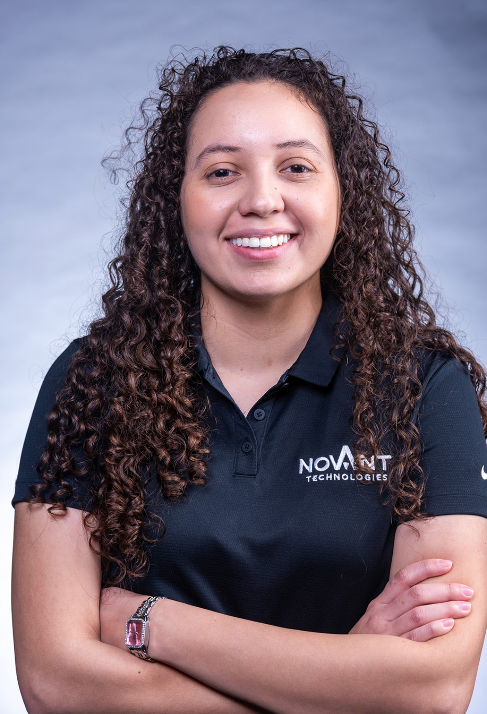

Welcome
Hello. I am a Computer Science student at California State University, Monterey Bay, and co-founder of Novant Technologies. My academic journey has allowed me to build a strong foundation in programming, systems design, and problem solving.
This website was created for CST336 Internet Programming and serves as an academic portfolio that highlights my background, technical experience, and areas of interest. It reflects both my coursework and my continued effort to grow as a developer.
I am particularly interested in software development, cybersecurity, and building systems that are secure, scalable, and reliable. I enjoy approaching challenges in a structured way and continuously refining my technical skills through hands on projects.
As I continue my studies, my goal is to contribute to meaningful technology solutions while strengthening my understanding of system architecture, security practices, and long term technical strategy.